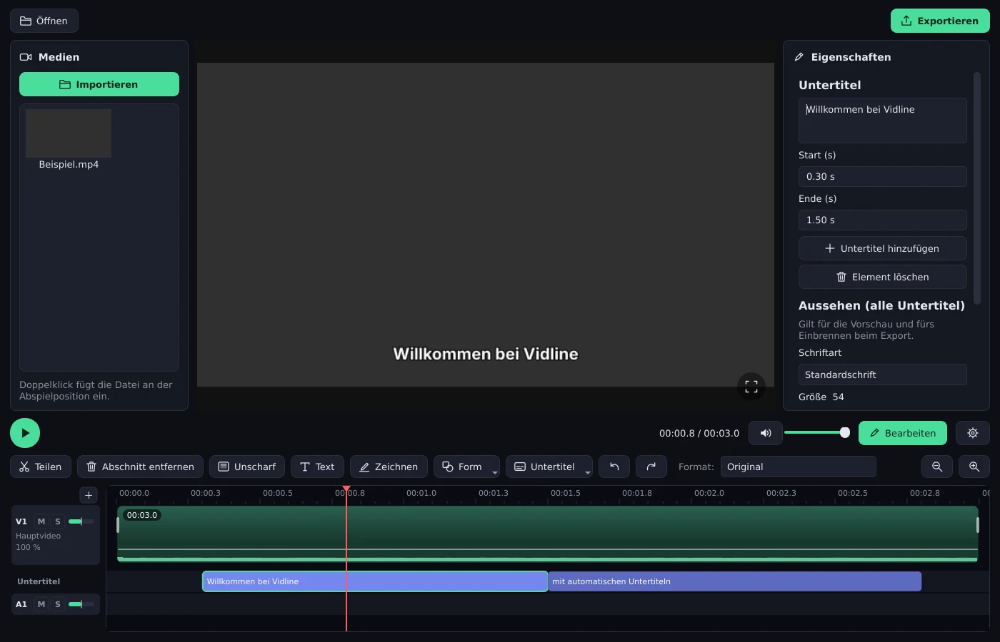
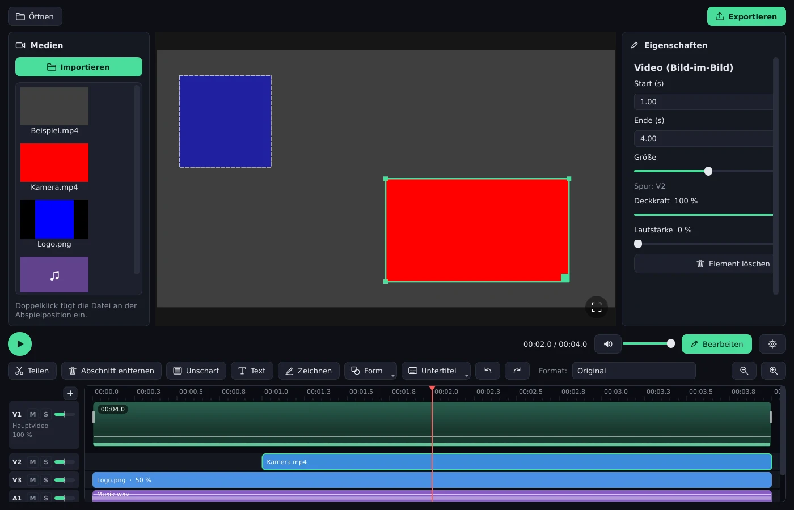
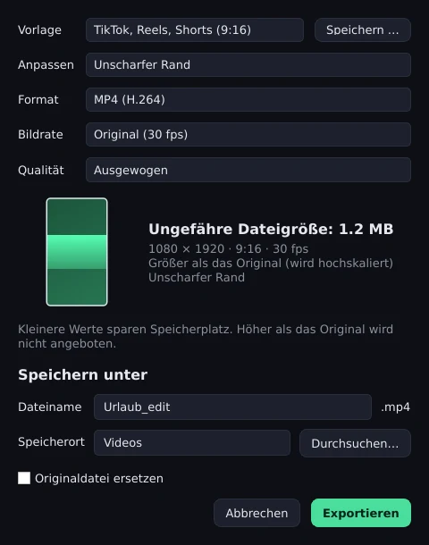
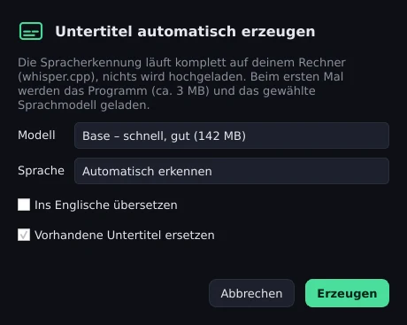
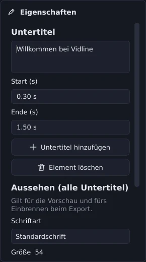
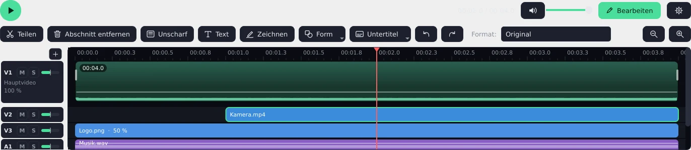
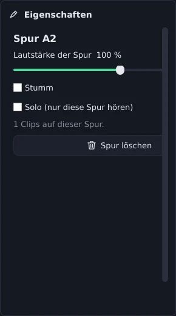
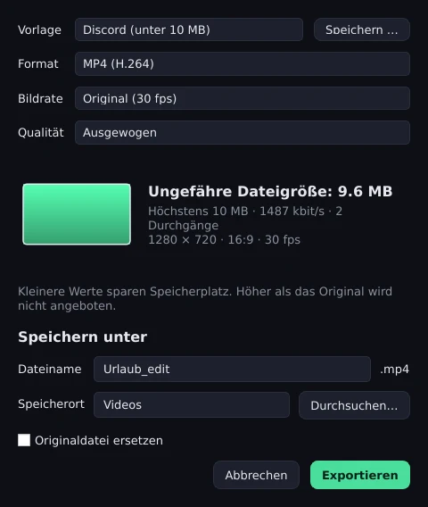
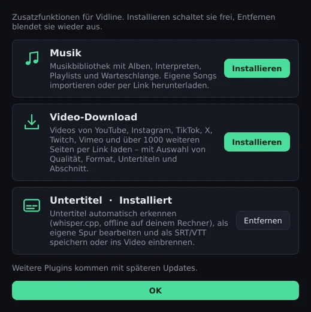

Das Untertitel-Plugin hört sich dein Video an und schreibt mit – offline auf deinem Rechner, ohne Upload. Die erkannten Untertitel liegen als eigene Spur in der Zeitleiste, du korrigierst Text und Zeiten direkt dort. Speichern als SRT oder VTT, als Untertitelspur in die Datei oder fest ins Bild, mit Schrift, Größe, Position und Rand nach Wahl.

Lege Videos und Bilder übereinander – Bild-im-Bild, Logo, Kamera-Einblendung – mit Position, Größe und Deckkraft. Musik und Sprache bekommen eigene Ton-Spuren. Jede Spur hat Lautstärke, Stumm und Solo, Clips ziehst du einfach auf eine andere Spur.

Ein Klick für TikTok, Reels und Shorts (9:16), YouTube in 1080p oder 4K, Instagram 1:1 oder GIF. Für Discord rechnet Vidline die Bitrate aus der Länge aus und bleibt sicher unter 10 bzw. 50 MB. Die Vorschau zeigt vorher, wie das Bild in den Rahmen passt und wie groß die Datei wird. Eigene Einstellungen speicherst du als Vorlage.






